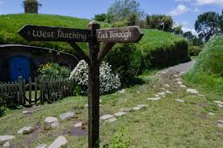
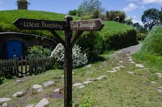

Auckland is up north of the north island just a hop, jump, and skip down from the top of the north island. Auckland was founded at 1350 AD by Māori settlers; Caption James cook mapped the coastline in 1769. In 1846 the governor William Hobson made Auckland the capital after the singing of the treaty of Waitangi. In Auckland our largest city there are many activities to do such as exploring the SkyTower looking down 328 meters above the city looking down at the majestic city, explore the thought provoking art gallery of Auckland showing meaning beyond expression, find out about the beauty, pain and suffering of war at the Auckland war museum.
In Auckland there are many things to do places to explore, examples of these things are. The sky tower towering over Auckland city at a whopping 328 meters above ground level, or explore the fine cuisine at the ocean side restaurant viaduct.
The bay of islands is located in the top of the northern island, only a 3-hour drive away from Auckland. Bay of islands is a great place for nature lovers, history buffs and adventurous sprits, with its many on water activities such as cruse to the hole in the rock an iconic sea tunnel, exploring the many islands hopping from one to another, parasailing and skydiving over and through the breathtaking beauty of the islands. on land activities include discovering where New Zealand became its own nation on the treaty of Waitangi.
The first settlers at bay of islands were Māori voyagers from Polynesia they arrived at the 10th century with permanent settlement at the 13th century. The first Europeans to arrive were caption cook and his men naming the place bay of islands in 1769.
The origine of Hobbiton. Back in 1998 peter Jackson was looking for places to record and produce the lord of the rings. It is located in the countryside of Matamata, in the Waikato region.
When you visit Hobbiton there are many things to do such as a guided walk thru the movie set, seeing where and how one of the most famous and popular movie series of all time came to be.
Auckland
Bay of islands
Hobbiton